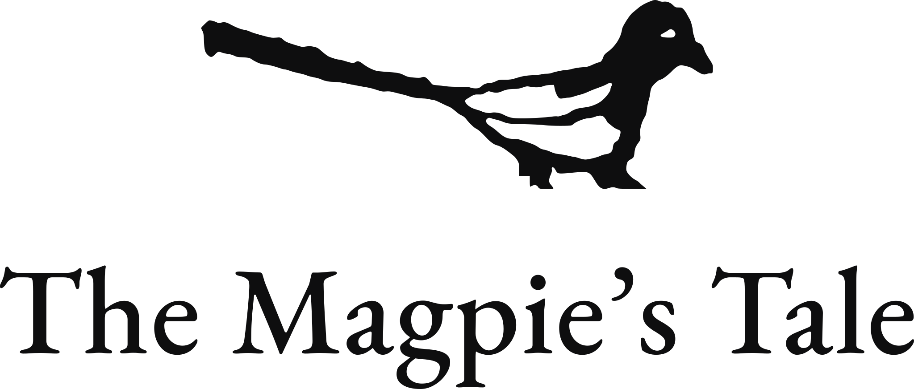
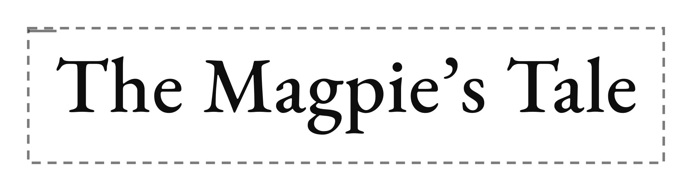
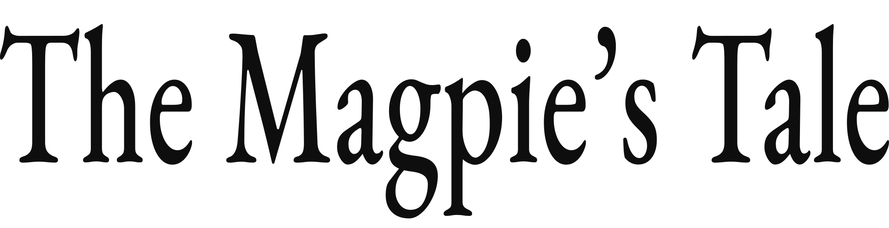
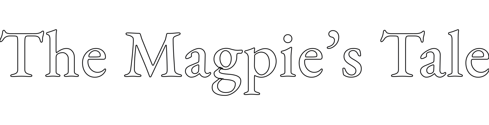
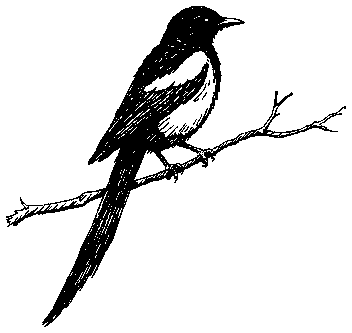
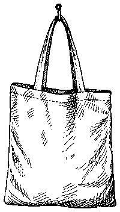
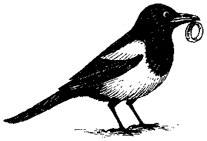

The Magpie’s Tale
An independent bookshop in Churchtown, Southport.
Brand Guidelines
01 The idea
The idea
An independent bookshop in Churchtown, Southport.
Everything is black and white, except the shimmer.
A magpie looks black and white until the light catches it. Then the tail turns green, then blue, then violet, and then it goes back to black. Ink and paper do the work, and one narrow band of colour is used to draw the eye.
A fascia board, a paper bag, a shelf card, a phone screen. Black and white because a signwriter and a screen printer can both match it exactly, in one colour, for very little. The gradient stays rare partly because it is the one thing neither of them can.
Readers in Churchtown and the rest of Southport who would rather be told what to read by a person than by a recommendation engine.
Not a gift shop that sells some books. Not a cafe.
Values
Read before recommended
Nobody here recommends a book they have not finished. It is slower, it limits what can go on the front table, and it is the reason people come back.
Small and chosen
Four hundred books the shop can vouch for beat four thousand it cannot. Shelf space is the scarcest thing in the building and it should be treated that way.
Part of Churchtown
Local writers, local schools, and whatever is happening on the village green. A shop that only talks about itself is a shop nobody talks about.
02 Logo
The logo
Two pieces that were made in deliberately different ways. The wordmark is typeset in EB Garamond and converted to outlines, so it stays legible down to a rubber stamp. The magpie is traced straight from the original drawing of the shopfront and has not been tidied up, because the wobble in the line is the only thing on this page that no other bookshop can copy.
Ink on white. The default everywhere. If in doubt, this one.
White out of Ink. For the fascia, the tote and anything printed dark.

For square and near-square spaces: the stamp, a loyalty card, an ad slot.

Social avatars, endpapers, the back of a bookmark. Only where the name is already obvious.
Clear space

Keep one cap height clear on every side, measured off the T. That margin stays empty: no text, no rule, no photograph edge, no other logo. The dashed box is a guide and does not print.
Minimum size
Below these the thin strokes in Garamond start to break up, and the magpie loses the white flash on its wing. If the space is smaller than the minimum, use the magpie on its own rather than shrinking the wordmark further.
What to avoid

Scale both dimensions together. Garamond is familiar enough that people notice when its proportions are off, even if they could not say why.
The most tempting one on this page, and worth resisting. The shimmer belongs to the tail rather than the type. The wordmark stays Ink or white.

No outlines, shadows, bevels or glows. If it is not showing up, the background is usually the thing to change.
03 Colour
Colour
Two colours and one gradient. Ink and paper carry every piece the shop makes, and the shimmer appears about as often as the light really does catch a magpie. A piece with no colour at all is still on brand. Colour in two places on the same piece is usually one too many.
Ink and paper
These two do most of the work. The rest of the palette is detail by comparison.
The shimmer
One colour, not three. It is shown as the gradient because that is the only form it takes; three chips side by side would suggest they can be used separately, and they cannot. The percentages are the stop positions, and the note in the next section explains how they were arrived at.
Tints of Ink
Not new colours. These are Ink at reduced strength, for the things that should be readable without competing with the text above them.
Approved combinations
04 Shimmer
The shimmer
The one piece of colour in the identity, and the one worth taking care over. A magpie is not teal. It is black, and it goes teal for a second when the light hits it at the right angle. The gradient works best when it behaves the same way: brief, and in one place. Spread across a whole background it stops reading as a magpie and starts reading as decoration.
The gradient
Teal to violet, left to right, with blue at 68%. This is the only form the colour ever takes.
This. Three stops, with the blue at 68%. The sweep stays saturated the whole way across and changes at an even rate.
Not this. Two stops. Teal and violet sit on opposite sides
of the colour wheel, so the midpoint lands on #344E7E, a flat slate blue, and the
sweep loses its colour through the middle.
Why 68% and not half way
Teal and blue are much further apart to the eye than blue and violet: in Lab, the first step measures about 56 and the second about 26. Put the blue at 50% and the sweep tears through the teal end and then crawls through the violet end. At 68% the two halves are the same perceptual size, so the colour changes at a steady rate the whole way across. It also leaves more teal in the bar, which is closer to how the sheen actually sits on the bird.
How to build it
/* The shimmer. All three stops, one direction, blue at 68%. */
background: linear-gradient(90deg, #0B6E6E 0%, #2A4E9B 68%, #5C2E8E 100%);
/* As a rule or an underline, which is how it is used most often. */
height: 3px;
background: linear-gradient(90deg, #0B6E6E 0%, #2A4E9B 68%, #5C2E8E 100%);
/* In print, same three stops at the same positions. */
0% C87 M32 Y46 K12
68% C86 M65 Y0 K9
100% C73 M89 Y0 K6Where it is allowed
As a rule
A 2 to 4 px line under a heading, along the top of a page, or down the edge of a card like the stained edge of a book block. This is the default use and covers most jobs.
Behind one button
One per page, on whichever thing matters most. White text only. A second shimmer button on the same page takes the emphasis away from the first.
- Use it once per page, poster or post.
- Run it in a straight line, left to right or top to bottom.
- Keep all three stops, in order.
- Put white on it when it sits behind text.
- Fill a whole background with it.
- Use one stop on its own as a flat colour.
- Make it radial, diagonal or animated.
- Put it behind or inside the wordmark.
- Set body text in any of the three colours.
05 Typography
Typography
One family throughout. EB Garamond is a revival of the types Claude Garamont cut in Paris in the 1540s, which have set literary publishing ever since. A bookshop setting its own name in Garamond puts it in the same trade as the things on its shelves. A second typeface would dilute that, which is why there is only one here.
EB Garamond
EverythingThe Magpie’s Tale
EB Garamond Italic
Emphasis and titlesWolf Hall, Hilary Mantel
Type scale
Setting rules
- Keep body text at 19px or larger on screen. Garamond has a small x-height, so it reads a full size smaller than a sans at the same measurement. At 16px it starts to go grey and hard to read, which is the most common way Garamond comes unstuck on the web.
- Use italic for emphasis, and for book titles. Bold is best left alone: EB Garamond’s bold was drawn centuries after the roman and sits awkwardly beside it.
- Set ragged right. Justified Garamond opens rivers of white down the column, which is worse than an uneven edge.
- Keep lines between 62 and 70 characters. Past that the eye loses the return.
- The shop’s name takes a curly apostrophe: The Magpie’s Tale rather than The Magpie's Tale. It is in the name, so it is worth the keystroke.
- Labels, eyebrows and buttons are set in small caps at 13px with 0.11em letterspacing, using the font’s own small caps rather than shrunken capitals. In CSS that is font-variant-caps: all-small-caps.
- Anything that is data rather than prose takes lining, tabular figures: prices, opening hours, phone numbers, dates, page counts. In CSS that is font-variant-numeric: lining-nums tabular-nums. Running prose keeps the oldstyle figures the font gives you by default, which is what makes numbers sit properly inside a sentence.
06 Voice
Tone of voice
Write the way somebody behind the counter talks on a quiet Tuesday. Someone who has read a great deal and has no particular interest in you knowing that. Warm, dry, specific, and not selling.
Say what it does, not how good it is
"Four hundred pages about a hotel and not one dull one" tells a reader something they can act on. "Unmissable" tells them nothing, and they have read it a thousand times before.
Dry, not clever
A light touch is welcome. A pun that draws attention to itself is less so. If a line makes the writer look good rather than the book sound worth reading, it can usually go.
Write it the way you would say it
Contractions, mostly. "If we haven’t got it" is what somebody behind the counter actually says; "if we have not got it" is what a form letter says. The shop sounds like a person or it sounds like a chain.
Stop earlier than feels right
A shelf card is about twenty five words. An event listing is two sentences. The temptation is to add one more clause, and the writing is usually better without it.
In practice
A novel about grief that’s somehow very funny. Start it on a day you’ve nothing on.
An unmissable emotional rollercoaster that will stay with you long after the final page!
Restocked at last. It took four months and two increasingly rude emails.
BACK IN STOCK! 🔥 Get yours before they’re gone!! 📚✨
Thursday, 7pm. Twenty chairs, one author, and wine that’s better than it needs to be.
Join us for an unforgettable evening celebrating the transformative power of storytelling.
Gone, sorry. We can have it here by Thursday if you want it putting aside.
We apologise for any inconvenience caused by the current unavailability of this item.
Shut today. Back at ten tomorrow.
We are currently closed but look forward to welcoming you back very soon!
Words
- bookshop
- reader
- shelf card
- we have read it
- order it in
- putting one aside
- secondhand
- Churchtown
- bookstore
- curated
- literary journey
- must-read
- unmissable
- page-turner
- hidden gem
- nestled
- customers
07 Illustration
Illustration
Two different drawing styles, and this section is about giving each one its own space. The shopfront is the shop’s own drawing: flat, open and unfussy. The spot illustrations are a supporting set in a more formal engraving style. Both are useful. At similar sizes they compete, and the shopfront comes off worse, so the rule below is about size rather than taste.
The primary illustration

The shop’s own drawing. It is the origin of the whole identity and the one image nobody else can use. It goes large, on white, on its own.
The spot set
A supporting set for section marks and headers. The line is finer and more worked than the shopfront, which is exactly why they only ever appear small. Below about 160 px the hatching reads as texture instead of as a second illustrator.






The size rule, and why it exists
- Keep spot illustrations under 160 px on screen, and under 40 mm in print.
- Use one spot per section, as a mark beside a heading.
- Let the shopfront be the only illustration on any piece it appears on.
- Keep them pure black on white, like everything else.
- Put a spot and the shopfront on the same page at similar sizes.
- Blow a spot up to fill a hero, a poster or a window.
- Scatter four or five spots across one page.
- Add a new spot in a third style. A new one is best commissioned to match either the shopfront or the spot set.
08 Applications
The brand applied
The four things the shop makes most. Once these are right the rest tends to follow the same logic: white paper, black type, and one piece of colour where it earns its place.
Paul Murray
A family falling apart over six hundred pages, and I resented every interruption. Take it on holiday.
a local author
Twenty chairs, one author, and wine that is better than it needs to be. Free, but tell us you are coming.
- Leave more white space than feels necessary. It is a large part of the identity.
- Photograph the actual shop, in daylight, against the actual shelves.
- Let the drawing of the shopfront do the work on anything that needs an image.
- Print black on white stock. Uncoated, and not cream.
- Put the wordmark and the magpie on the same face of anything. One or the other reads better.
- Use stock photography of artfully stacked books. Pictures of the actual shop always do more.
- Add a second colour for Christmas or World Book Day. Black and white holds up all year.
- Set the shop name in anything other than Garamond, including in an email signature.
09 Checklist
Before it goes out
A thirty-second pass that catches most things. It is the shop’s brand, so nothing here needs anyone’s permission. This is just the list of things that are easy to miss and annoying to reprint.
- Background is white rather than cream or off-white.
- The logo has a full cap height clear on all four sides.
- Everything is set in EB Garamond.
- Body text is 19px or larger on screen, 10pt or larger in print.
- Emphasis is italic rather than bold.
- The apostrophe in the shop name is curly.
- More than one shimmer element in the same piece.
- A shimmer colour used flat, without the gradient.
- The wordmark stretched, outlined, shadowed or recoloured.
- Exclamation marks, which the shop’s voice rarely needs.
- Emoji in shop copy.
- A second typeface slipping in for a one-off.
- Co-branding with a publisher, a festival or another shop.
- The logo on merchandise that is being sold rather than given away.
- Anything printed larger than A1, including the window.
- A one-off campaign that seems to want a new colour. There is usually a way to do it in black and white.
10 Downloads
Downloads
Everything a printer, a signmaker or a collaborator is likely to ask for. When somebody asks for "the logo", the pack is usually more useful than a screenshot from this page, and it tends to save a reprint.
Logos
{kind=link}
{kind=link}
{kind=link}
Questions about any of this?
These guidelines are a living document. If something you need is not covered here, whether that is a new format, a co-branded piece or an application nobody has thought of yet, get in touch and we will extend the system properly rather than leave you guessing.
- Document
- Version 1.0
- Issued 20 August 2026